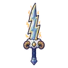
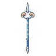

แกะเมฆเขาม้วน
มอนธาตุลม Lv 38–52
เจอที่
| แมพ | โซน | Lv | ภูมิภาค |
|---|---|---|---|
| ทุ่งลมหวีดหน้าผา | 46–50 | ที่ราบสูง | |
| ทุ่งลมหวีดหน้าผา | ยอดผาลมแรง | 48–52 | ที่ราบสูง |
| ทุ่งเฮเทอร์ม่วง | 38–50 | ที่ราบสูง | |
| ทุ่งเฮเทอร์ม่วง | กระท่อมหินหลังคาหญ้า | 46–50 | ที่ราบสูง |
| ช่องเขาเสาหินหวีด | 38–50 | ที่ราบสูง | |
| ช่องเขาเสาหินหวีด | เสาหินรูหวีด | 46–50 | ที่ราบสูง |
| กังหันลมร้างริมผา | 38–50 | ที่ราบสูง | |
| กังหันลมร้างริมผา | กังหันลมหินร้าง | 46–50 | ที่ราบสูง |
ค่าสถานะตามเลเวล
| Lv | HP | ATK | DEF | MDEF | EXP | Job |
|---|---|---|---|---|---|---|
| 38 | 6,758 | 76–114 | 17 | 7 | 51 | 38 |
| 45 | 10,907 | 92–139 | 20 | 8 | 59 | 44 |
| 52 | 16,199 | 106–159 | 23 | 9 | 66 | 50 |
ตีด้วยธาตุไหนดี
แรงขึ้น: ดิน ×1.5 พิษ ×1.25
เบาลง: น้ำ ×0.5 ลม ×0.25
วัตถุดิบที่ดรอป
| ของ | โอกาส | |
|---|---|---|
| ขนแกะเมฆ | 60% | 1 ชิ้น (15% ได้ 2) |
อุปกรณ์ที่ดรอป (10)
| ของ | โอกาส |
|---|---|
| 0.25% | |
| 0.25% | |
| 0.25% | |
| 0.12% | |
| 0.12% | |
 ดาบใหญ่ฟ้าร้อง | 0.06% |
| 0.06% | |
 หอกยาวแกะเมฆ | 0.06% |
| 0.06% | |
| 0.06% |
สกิล
ทุบพื้น (Lv 25+) · ทุบพื้น (Lv 60+) · ร่างแข็ง (Lv 60+)